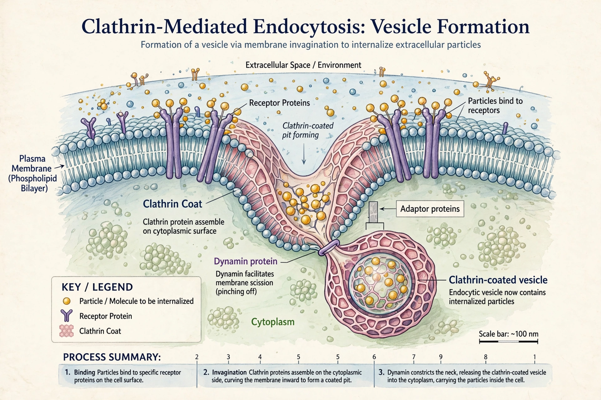

Endocytosis

| Type | Active membrane transport |
|---|---|
| Main forms | Phagocytosis, pinocytosis, receptor-mediated endocytosis |
| Key proteins | Clathrin, dynamin, adaptins, Rab GTPases |
| Opposite process | Exocytosis |
Endocytosis is a cellular process in which substances are brought into the cell by the invagination of the cell membrane, which folds inward to form a vesicle containing the ingested material. It is a form of active transport used by all eukaryotic cells to take up nutrients, sample their environment, recycle membrane components and regulate cell-surface receptors.
Types
Phagocytosis ("cell eating") is the uptake of large particles such as bacteria and dead cells, performed by specialised cells including macrophages and neutrophils. Pinocytosis ("cell drinking") is the non-specific uptake of extracellular fluid and dissolved solutes in small vesicles. Receptor-mediated endocytosis concentrates specific ligands — such as low-density lipoprotein (LDL) cholesterol and transferrin-bound iron — at clathrin-coated pits, which pinch off with the help of the GTPase dynamin to form clathrin-coated vesicles.
Pathway
After uncoating, vesicles fuse with early endosomes, where the mildly acidic pH causes ligands to dissociate from their receptors. Cargo is sorted: receptors are usually recycled to the cell surface, while material destined for degradation passes through late endosomes to lysosomes. Many viruses and toxins, including cholera toxin and influenza virus, exploit endocytic routes to enter cells. Defects in receptor-mediated endocytosis of LDL, caused by mutations in the LDL receptor, produce familial hypercholesterolaemia.